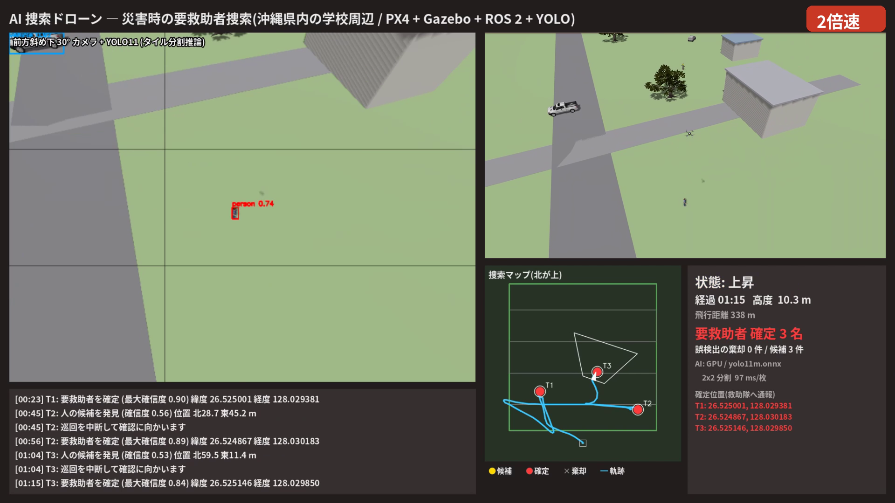
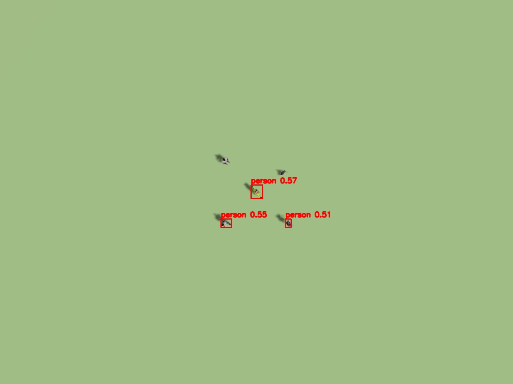
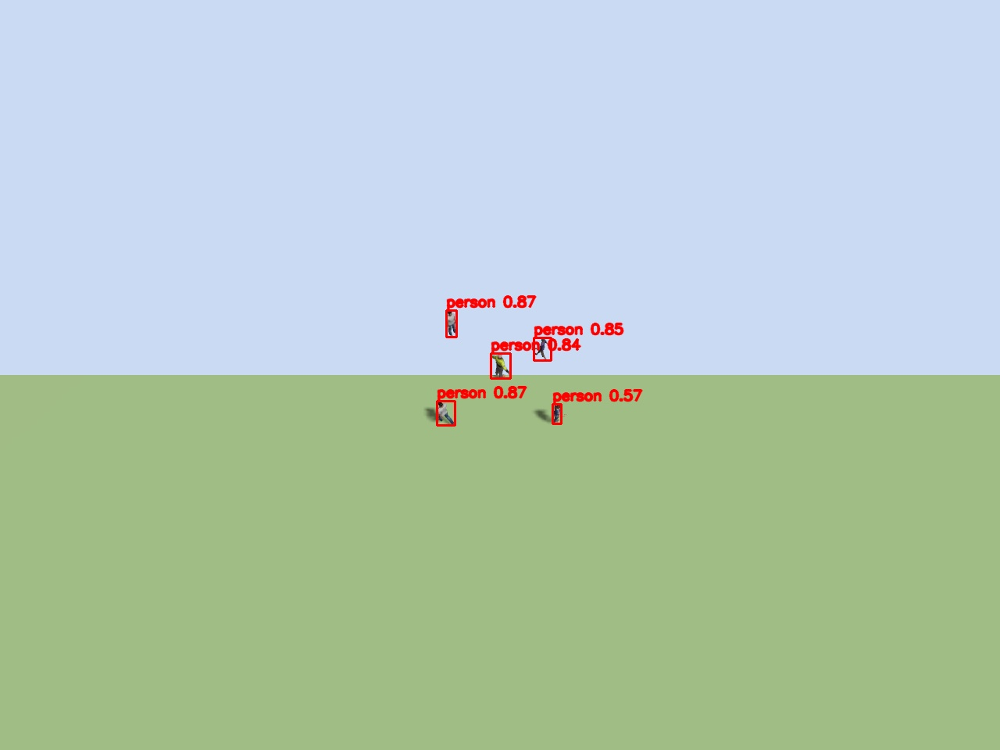
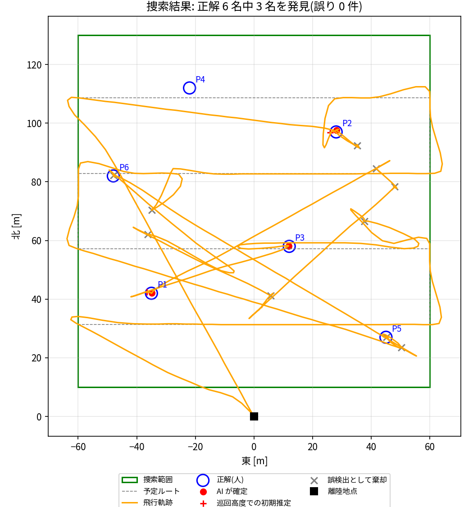
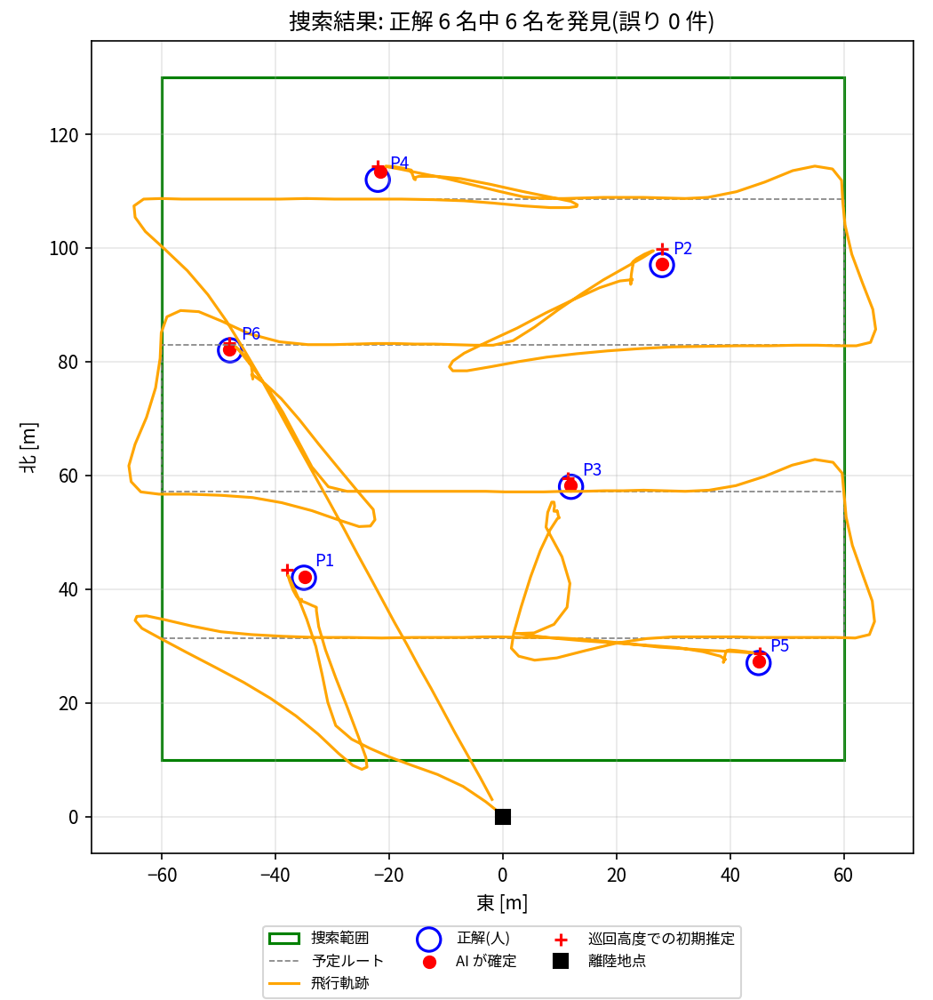

地震や豪雨のあとは、倒れている人や取り残された人を短い時間で見つけて、救助隊に正確な位置を伝える必要があります。 人が上空から目視で捜すと、見落としや疲労が避けられません。この課題では、ドローンが自律的に捜索範囲を巡回し、 カメラ映像を AI で解析して人を見つけ、近づいて確かめ、緯度・経度を報告するシステムを作りました。
3 つの ROS 2 ノードで構成しています。
detector：カメラ画像を AI で解析する。mission：飛行の手順を決め、PX4 に位置目標を送る。dashboard：表示画面を描く。PX4 とは uXRCE-DDS でつなぎ、Gazebo のカメラ画像は ros_gz_image で ROS 2 に流しています。
mission の状態遷移は次のとおりです。
| 状態 | 動作 |
|---|---|
| 巡回 | 高度 18 m・秒速 7 m で往復ルートを飛ぶ。毎秒 1 回、AI で人を検出する |
| 候補へ移動 | 確信度 0.45 以上の人が見つかったら巡回を中断する。候補が画像の中央に写る位置へ、機首を候補に向けて移動する |
| 降下・再確認 | 高度 10 m まで降りる。確信度 0.6 以上で 2 回検出したら「確定」、6 秒たっても検出できなければ「誤検出」として棄却する |
| 巡回へ復帰 | 巡回高度へ上昇し、中断した地点から巡回を再開する。全ルートが終わったら帰還・着陸し、報告書(JSON)を保存する |
高度 18 m から見ると、人は画像の中で十数画素ほどの大きさです。YOLO の入力(640×640)に画像全体を縮小すると、さらに小さくなります。 実験では、画像全体を 1 回で推論する方式では、高度 10〜30 m のすべてで人を 1 人も検出できませんでした。 そこで、画像を重なりのある 3×3 のタイルに分けて縮小せずに推論し、元画像の座標に戻してから NMS(重複した検出をまとめる処理)をかけるようにしました。 高度 12 m 未満では 2×2 に切り替えて、速度を優先します。
最初は真下向きのカメラで捜索しましたが、6 名中 3 名しか発見できませんでした。見逃したのは、すべて立っている人・歩いている人です。 真上からでは頭と肩しか写らず、AI の確信度が 0.5 程度にとどまったことが原因でした。 カメラの角度を変えて比べたところ(表1)、斜めから見ると全身が写り、確信度が 0.8 以上に上がりました。 そこで、PX4 の x500 にカメラを 30° 前へ傾けて付けた機体モデルとエアフレーム(機体設定)を作り、PX4 に登録しました。


| 高度 | 真下 | 前へ 30° | 前へ 45° |
|---|---|---|---|
| 18 m | 3 名 | 5 名 | 5 名(画像の上端が地平線に近く、遠方の位置推定が不安定) |
救助の場面で一番困るのは、誤報で救助隊を空振りさせることです。巡回中の検出は「候補」として扱い、 近づいて高度を下げ、近い距離の画像でもう一度 AI に判定させてから「確定」します。 近距離で検出できない候補(木の影や車の一部を人と見誤ったものなど)は棄却します。 近距離での推定位置の平均を確定位置にするので、位置の精度も上がります(初期推定の誤差 2.3 m → 確定後 0.4 m)。
検出枠の中心にあたる画素から視線ベクトルを作ります。これをカメラの傾きと機体の姿勢(四元数)で地上の座標系(NED)に回し、地面との交点を求めます。 前進中の機体は 10° 前後傾いているので、この補正がないと数 m ずれます。 推論には約 0.2〜1 秒かかるため、画像を受け取った瞬間の姿勢と位置を保存しておき、その値で計算しています。これで、推論中に機体が動いてもずれません。
| 真下カメラ(改善前) | 斜め 30° カメラ(改善後、4 回) | |
|---|---|---|
| 発見した要救助者(再現率) | 3 / 6(50%) | 6 / 6(100%)× 4 回 |
| 誤った確定(適合率) | 0 件(100%) | 0 件(100%)× 4 回 |
| 誤検出として棄却した候補 | 10 件 | 1, 1, 0, 0 件 |
| 確定位置の誤差 平均 / 最大 | 0.31 / 0.64 m | 0.41 / 1.44 m |
| 飛行時間 | 486 s | 237〜254 s |


改善後は 4 回の飛行すべてで、6 名全員を誤りなく確定しました。 斜めカメラで AI の確信度が全体に上がったため、候補のしきい値を上げても見逃しが出ませんでした。誤検出への寄り道が減ったことで、飛行時間もほぼ半分になっています。
PX4-Autopilot v1.18(SITL)、Gazebo Harmonic 8、ROS 2 Humble、Micro XRCE-DDS、ros_gz_image、 Ultralytics YOLO11m / YOLO11s(COCO 学習済み、ONNX に変換)、ONNX Runtime GPU 1.20、OpenCV、Pillow、Gazebo Fuel の人・車・樹木モデル。 推論は学習済みモデルのみを使っています(追加の学習はしていません)。 検証環境は Ubuntu 22.04 と NVIDIA RTX 3060 Laptop GPU です。